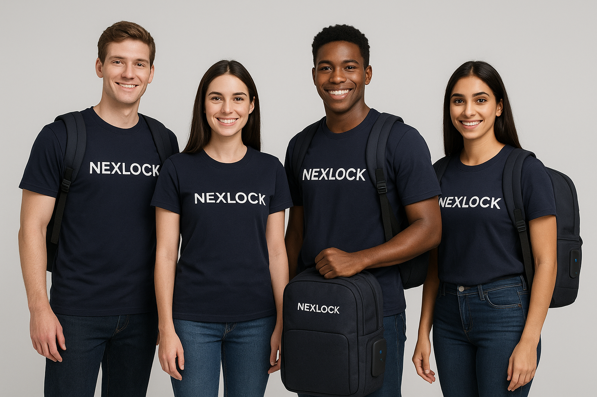

Sobre Nexlock
Nexlock nació con la visión de reinventar la forma en que las personas transportan sus pertenencias. Creemos que una mochila puede ser mucho más que un accesorio: puede ser tu asistente, tu protector y tu compañero digital.
Nuestra misión
Facilitar la vida de quienes están en movimiento mediante tecnología útil, diseño inteligente y materiales de alta calidad.
Valores que nos definen
- 🚀 Innovación constante.
- 🔒 Seguridad ante todo.
- 🌱 Compromiso con la sostenibilidad.
- 🤝 Cercanía con nuestros usuarios.